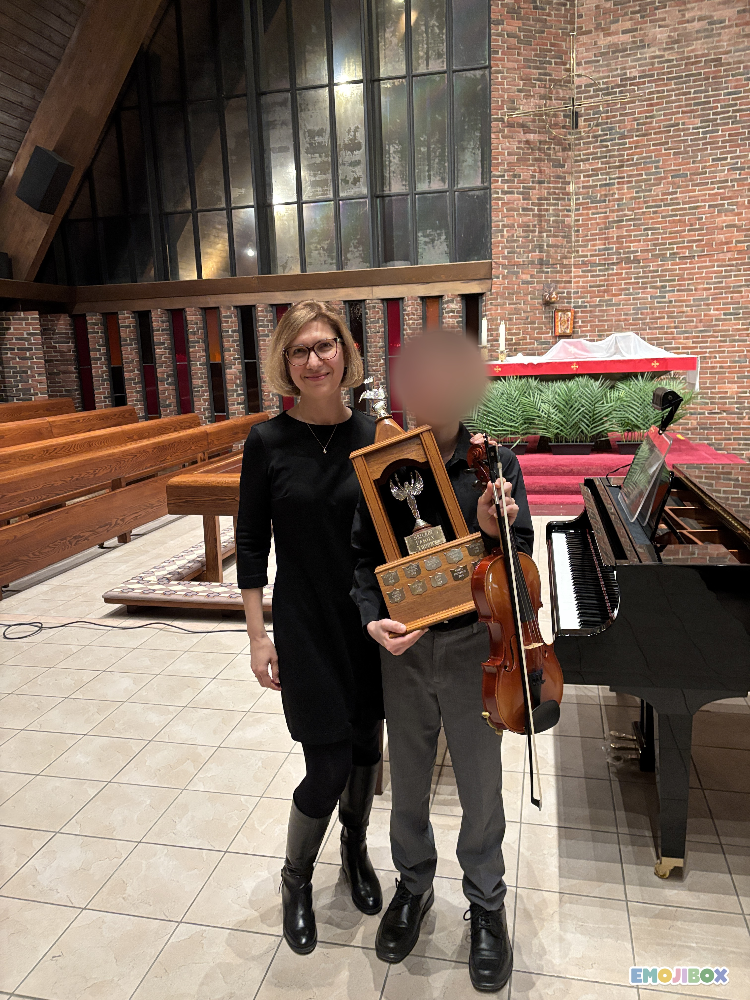

RCM Mastery
Expert preparation for RCM Level 1 through ARCT.
Masterclass Studio | Ottawa
Master-level guidance for dedicated students and advanced performers. Led by Myroslava Negovora, Master of Music and former member of the National Odessa Philharmonic Orchestra.
The Pedigree
With over 30 years of international performance and pedagogical experience, Myroslava Negovora brings the rigorous traditions of the European conservatory to Stittsville. Holding a Master of Music degree in Violin Performance and Pedagogy, Myroslava specializes in transforming technical proficiency into true musical storytelling.

The Dedicated Track
This studio is designed for students who seek more than casual lessons. We focus on the discipline, sound production, and technical precision required for the highest levels of play.
Expert preparation for RCM Level 1 through ARCT.
Technical and mental coaching for the Ottawa Kiwanis Music Festival and local competitions.
Mastering excerpts and building the confidence required for youth and community orchestras.
Music that sounds great, feels rewarding to play, and is a joy to listen to.
Music and Development
A strong foundation supports focus, listening, and confidence. Lessons build habits that carry into school, performance, and everyday life.
Weekly goals and careful practice routines teach follow-through and patience.
Students develop a trained ear, stronger recall, and musical attention to detail.
Performance coaching turns nerves into confidence and helps students express themselves.
Student Success

From the first scale to the winner's podium - celebrating the discipline and triumphs of the Negovora Studio.
"Mira knows how to find a unique approach to every child."
"Her teaching methods are excellent, and my child's musical ability has been progressing very well."
"I have had only the best experience. She is a fantastic violinist and teacher."
"In just six months, our daughter made great progress under Mira's guidance."
"Mira is an outstanding teacher! She is patient, knowledgeable, and truly dedicated to her students' progress. Thanks to her guidance, I have won the Kiwanis Musicianship Trophy and multiple 1st and 2nd place awards at Kiwanis competitions. She knows how to bring out the best in her students and help them reach a high level. Highly recommended for anyone serious about violin!"

Studio Community
The studio is built on steady progress, shared pride, and high standards. Students support one another through recitals, competitions, and exam seasons, creating a learning environment that feels both warm and professional.
Studio and Logistics
Private lessons are held in a professional home studio environment in Stittsville, Ottawa.
1001 Shimmerton Cir, Kanata, ON K2R 1G9